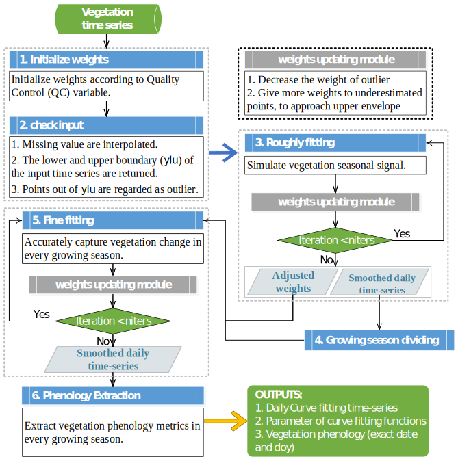

A state-of-the-art remote sensing vegetation phenology extraction package: phenofit
-
phenofitcombine merits of TIMESAT and phenopix - A simple and stable growing season dividing methods was proposed
- Provide a practical snow elimination method, based on Whittaker
- 7 curve fitting methods and 4 phenology extraction methods
- We add parameters boundary for every curve fitting methods according to their ecological meaning.
-
optimxis used to select best optimization method for different curve fitting methods.
Task lists
-
Test the performance of
phenofitin multiple growing season regions (e.g. the North China Plain); - Uncertainty analysis of curve fitting and phenological metrics;
- shiny app has been moved to phenofit.shiny;
- Complete script automatic generating module in shinyapp;
-
Rcppimprove double logistics optimization efficiency by 60%; - Support spatial analysis;
- Support annual season in curve fitting;
- flexible fine fitting input ( original time-series or smoothed time-series by rough fitting).
- Asymmetric of Threshold method

Figure 1. The flowchart of phenology extraction in phenofit.
Installation
You can install phenofit from github with:
# install.packages("devtools")
devtools::install_github("kongdd/phenofit")References
1
Kong, D., Zhang, Y., Wang, D., Chen, J., & Gu, X. (2020). Photoperiod Explains the Asynchronization Between Vegetation Carbon Phenology and Vegetation Greenness Phenology. Journal of Geophysical Research: Biogeosciences, 125(8), e2020JG005636. https://doi.org/10.1029/2020JG005636
2
Kong, D., Zhang, Y., Gu, X., & Wang, D. (2019). A robust method for reconstructing global MODIS EVI time series on the Google Earth Engine. ISPRS Journal of Photogrammetry and Remote Sensing, 155, 13–24.
3
Kong, D., (2020). R package: A state-of-the-art Vegetation Phenology extraction package,phenofitversion 0.2.6, https://doi.org/10.5281/zenodo.3605560
4
Zhang, Q., Kong, D., Shi, P., Singh, V.P., Sun, P., 2018. Vegetation phenology on the Qinghai-Tibetan Plateau and its response to climate change (1982–2013). Agric. For. Meteorol. 248, 408–417. https://doi.org/10.1016/j.agrformet.2017.10.026